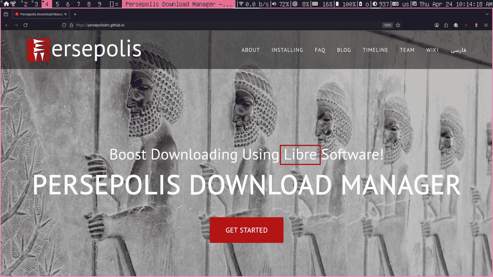
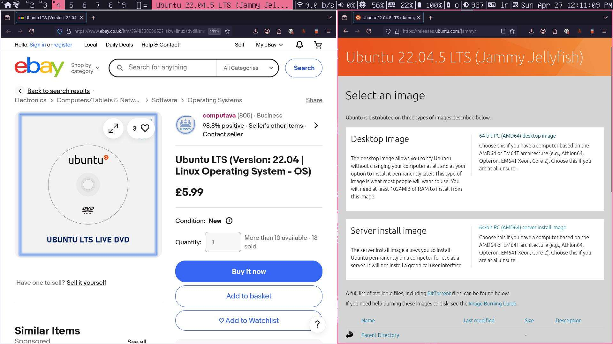
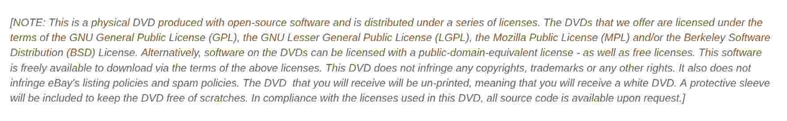
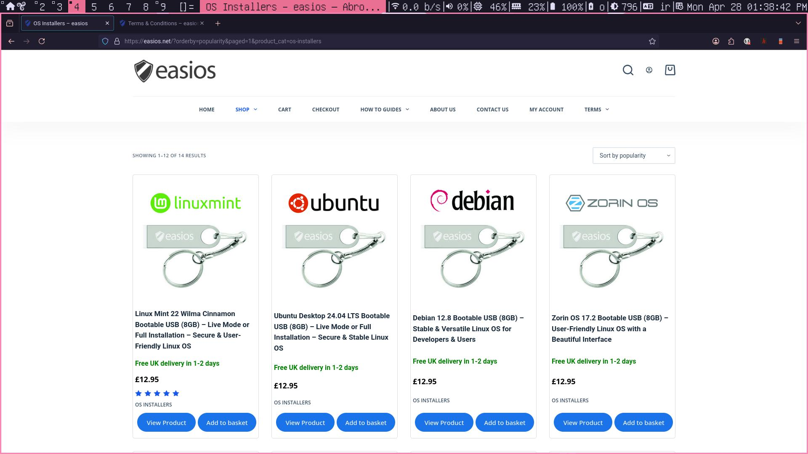
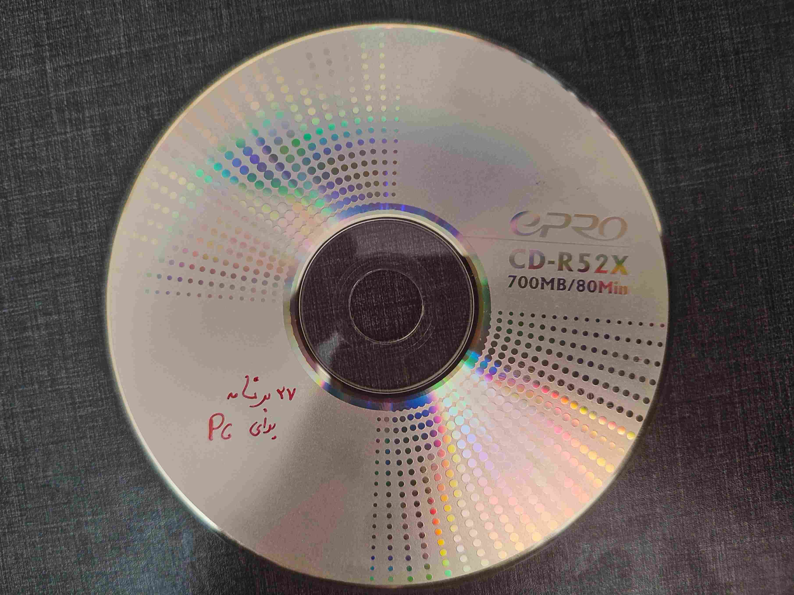

درود به همگی. امیدوارم که در خوشی و تندرستی کامل به سر ببرید. راستش موضوع این پست خیلی یهویی زد و به سرم. تصمیم گرفتم درمورد فروش نرمافزار آزاد یک مقداری صحبت کنم باهاتون. قرار نیست درمورد استراتژی های فروش نرمافزار آزاد صحبت کنیم. قراره درمورد مفهومی که داره صحبت کنیم. تا به امروز با آدمای زیادی هم صحبت شدم که فروش نرمافزار آزاد براشون عجیب و گنگ بوده. نکته جالب اینجاست که نیمی از این افراد جزو مبتدی ها نبودن! یعنی کسایی بودن که تا حد قابل قبولی درمورد چهار آزادی اصلی نرمافزار و بنیاد های جنبش نرمافزار آزاد میدونستن. این میتونه چند تا دلیل داشته باشه. یک سری از افراد در حالی که میدونن چهار تا آزادی چیه هنوز بخشی از ذهنشون واژه “Free” رو همزمان “آزاد” و “رایگان” میدونه. وقتی از این دسته از افراد پرسیدم چرا اینطوری فکر میکنید در جوابم گفتن “خب همه نرمافزار های آزاد که تا امروز دیدم رایگان بودن”. من فکر میکنم این یکی از دلایل مهم هست که در نوشته های موجود در سایت GNU همیشه پیشنهاد شده از واژه “Libre” استفاده کنیم. فرض کنید قصد دارید نرمافزار آزادی که توسعه دادید و رایگان هم هست را در دسترس عموم قرار بدید. هویت نرمافزار شما مشخصه اما بهتره که درمورد کج فهمی عموم حساس باشید. قرار نیست تنها افرادی که میدونن نرمافزار آزاد چی هست کاربر نرمافزاری باشند که شما توسعه دادید. در این حالت نرمافزار آزادی که شما توسعه دادید شامل مقداری پتانسیل برای تبلیغ نرمافزار آزاده و ابزار شما برای قدم برداشتن در مسیر جنبش نرمافزار آزاد هست. مشخصه کسایی که با نرمافزار آزاد آشنا نیستن با عنوان شماره یک هویت نرمافزار رو به درستی متوجه میشن و باعث درک بهتری میشه اونم وقتی هنوز که هنوزه ترجمه اشتباه واژه “Free” برای معرفی یک نرمافزار آزاد استفاده میشه و البته تنها ترجمه که عموم مردم از این واژه دارند “رایگان” هست!
۱. Libre & Free Software
۲. Free Software
خودم برام جذابه وقتی میبینم از واژه “Libre” استفاده میشه. برای مثال میتونم به دانلود منیجر پرسپولیس اشاره کنم.

خب شاید این صحبت جاش اونقدار توی این پست نبود ولی خواستم بگم بنظرم اگر طی این سال ها به همین نکته ساده توجه میشد امروزه افراد کمتری وجود داشتن که سر مفهوم واژه ها که بیانگر هویت نرمافزار هست اشتباه کنن. فرض کنید همین خود شما نرمافزار آزاد رو نمیشناختید و موقع دانلود یک نرمافزار آزاد به عنوان شماره دوم از عناوین بالا برخوردید. طبق دانسته قبلی و ترجمه مرسوم واژه “Free” که توی ذهنتونه مثل روز مشخصه که اون رو بعنوان نرمافزار رایگان خواهید شناخت. ولی حداقل اگه به عنوان اول برمیخوردید بازم یک احتمالی بود که کنجکاو بشید و سرچ کنید تا بفهمید منظور از نرمافزار “Libre” چیه و همچنین باعث میشد به خودتون بگید اگه نرمافزاری داریم که هم “Libre” هست و هم “Free” پس امکانش هست که یک نرمافزار “Libre” ولی “NonFree” هم وجود داشته باشه! همین باعث میشه خود به خود تفکرات به سمت درستی بره و زمینه ساز پذیرش راحت یک سری چیز ها مثل موضوع همین پست بشه. این یکی از دلایلی بود که غیر مستقیم و مؤثر به مرور زمان باعث میشه که فروش نرمافزار آزاد برای خیلی ها عجیب باشه. دلایل دیگه میتونه ضعف فعالان جنبش نرمافزار آزاد از جمله خود من در آموزش و آگاهسازی عموم باشه که البته من با نوشتن این پست سعی در آموزش افراد علاقمند و کنجکاو دارم. دلیل دیگه عدم وجود علاقه قلبی و اشتیاق افراد برای یادگیری مفاهیم و فلسفه نرمافزار آزاد هست. این مورد خودش یه موضوع جداست ولی وقتی این مشکل وجود داره چه من محتوای آموزشی درست کنم چه خود GNU هیچ فایده ای نداره چون افراد نمیخوان که یاد بگیرن و این در واقع همون نقطه ای هست که افراد بطور ناخوداگاه تلاش فعالان جنبش نرمافزار آزاد برای آموزش، آگاهسازی و ترویج فرهنگ نرمافزار آزاد رو تحمیل فرهنگ نرمافزار آزاد، حساسیت زیادی و تندروی میبینن. راستش برای همینه که کم و بیش گفتم ترویج این فرهنگ کار حساسیه و باید یکم رفتارشناسی و روانشناسی رو به کار ببریم. میدونم مقداری پر حرفی کردم ولی حداقل درمورد دلایل بطور ریشه ای تا جایی که میشد باهاتون صحبت کردم. ^^
خب بریم سراغ بحث اصلی و سوال فروش نرمافزار آزاد چطور ممکنه؟ ببینید خود GNU مخالف استفاده از عبارت “فروش نرمافزار آزاد” هست. چرا؟ چون باعث برداشت اشتباه میشه. پیشنهاد میکنه که از عبارت “توزیع نرمافزار آزاد در ازای یک هزینه” استفاده بشه چون چیزی که مردم با عبارت اول به ذهنشون میاد انحصار و همون مدلی هست که شرکت ها نرمافزار های انحصاری خودشون رو به فروش میگذارن. فکر کنم تا همین الانم متوجه تاکید GNU به استفاده از واژه ها و عبارات شفاف شدید. خیلی نسبت به کج فهمی عموم حساسه که البته حساسیتش بی جا نیست. در اینجا چهار تا نکته قابل توجه وجود داره که خیلی جالبن. خود GNU مخالف دریافت پول برای نرمافزار آزاد نیست، محدودیت قیمتگذاری برخلاف فلسفه نرمافزار آزاده، آزادی شامل حق فروش نرمافزار هم میشه و ممنوعیت فروش خودش نشونه ای از نرمافزار غیر آزاده! نرم افزار آزاد به شما آزادی توزیع رو میده. چه بدون تغییرات و چه با تغییرات! اگر حتی دو نسخه یکسان از یک نرمافزار آزاد وجود داشته باشه و نسخه اول از طریق یک وبسایت بطور رایگان و نسخه دوم از طریق یک مغازه یا فروشگاه با قیمتی مشخص توسط سازنده اصلی توزیع بشه هیچ مشکلی نداره! میدونم ممکنه تعجب کرده باشید ولی به این فکر کنید که در نهایت با صرف نظر از قیمت، هر دو این ها نرمافزار آزاد هستن. برای همینه که میگیم آزادی نرمافزار درمورد قیمت نیست. نکته دیگه اینه که اگر من بعنوان خریدار، نسخه دوم که شامل هزینه هست رو بخرم همچنان در توزیع کردنش آزادم. برای مثال میتونم بدمش به شما تا ازش استفاده کنید. این خودش به نحوی در راستای هدفیه که پشت آزادی توزیع در نرمافزار های آزاده یعنی دسترسیپذیری هر چه بیشتر! جا داره که یک مثال جالبی هم بزنم. توی ایران شده که یه زمانی همه ما یک روز بریم و از مغازه یا کافینت سر کوچه یک سری نرمافزار هایی رو در قالب فیزیکی خریداری کنیم و بعد از استفاده اون رو به دوستمون بدیم تا روی سیستم عامل خودش نصب کنه. البته این عمل در برابر محصولات نرمافزاری انحصاری انجام میشد بیشتر. درسته که اینجا توی ایران به کپیرایت درصدی اهمیت داده نمیشد و همچنان هم نمیشه ولی بازم در نهایت این زیر پا گذاشتن یک قانونه. برای مثال یکی از مواردی که خیلی خریداری میشد همین دیویدی های ویندوز بود. اگر یادتون باشه همیشه قیمت بالایی هم داشتن برای همین دیگه یجوری شده بود که بقیه قبل اینکه خریداری کنن، اول از دوست یا آشناشون سوال میکردن که ازشون قرض بگیرن و استفاه کنن. سیستم عامل ویندوز نرمافزار آزاد نبوده و نیست این که مشخصه و به علاوه اون شرکت های داخلی هم که اینجوری ویندوز رو توزیع میکردن کار قانونی انجام نمیدادن ولی مدلی که همه ما داشتیم انجام میدادیم در راستای دسترسیپذیری هر چه بیشتر بود. فرض کنید یک شرکت داخلی بجای یک نرمافزار انحصاری یک نرمافزار آزاد رو به این شکل توزیع میکرد. در این حالت میشه گفت به طور کل صرف نظر از موقعیت جغرافیایی فعلی در هر جای دیگری که قوانین مهم و پر رنگن، کار این شرکت اشکالی نداشت. از بین توزیع های گنو/لینوکس میشه گفت Ubuntu خیلی خیلی بیشتر از بقیه توزیع ها توسط شرکت های داخلی به این شکل داره توزیع میشه. اینکار هیچ اشکالی نداره و مثال خوبیه. در سمت مقابل در مورد نرمافزار های انحصاری دقت کنید که در نهایت غیر آزادن حتی اگه یک کپی از اون رو بصورت رایگان از منبع اصلی یا غیر اصلی بگیرید. وقتی میگیم نرمافزار آزاد درمورد قیمت نیست یعنی این. چیزی که مهمه درک درست کاربر از این جمله هست. این همه تا امروز کسایی که مثل من یک فعال جنبش نرمافزار آزاد هستن به عموم مردم گفتن منظور از "Free" در “Free Software” یعنی آزاد، نه رایگان. چقدر واقعا تلاش شد که بقیه رو به درک واقعی برسونیم؟ مشخصه که هدفمون از گفتن این جمله آموزش زبان انگلیسی نیست بلکه شناخت و درک کامل عموم نسبت به موضوع هست! ^^
خب بیاید یک مثال از دنیای واقعی به جز ایران رو با هم بررسی کنیم. یک نگاه به عکس زیر بندازید. در صفحه سمت راست شما میتونید توزیع گنو/لینوکسی Ubuntu رو بدون پرداخت هزینه از سایت رسمی Ubuntu دانلود کنید اما در صفحه سمت چپ میتونید همین نسخه رو بصورت فیزیکی از یک شرکت دیگه با قیمتی مشخص خریداری کنید.

طبق توضیحاتی که دادم این حالت از نظر قانونی مشکلی نداره. کمی پایین تر یادداشت خیلی جالبی وجود داره که بد نیست یک نگاهی بهش بندازیم.

این متن داره میگه که نرمافزار هایی که روی این دیویدی موجودن تحت یک سری از لایسنس های آزادن یعنی این محصول شامل نرمافزار های آزاد هست که کاربر آزادی اجرا، کپی، توزیع، مطالعه، تغییر و بهبودشون رو داره. همچنین به این مورد اشاره شده که علاوه بر آزاد بودنشون رایگان هم هستن و میتونید بدون پرداخت هزینه هر کدوم رو دانلود کنید. این دیویدی قانون کپیرایت، علامت تجاری یا سیاستهای سایت رو نقض نمیکنه و نه عکس داره نه برچسب و با یک کاور ساده میرسه به دست خریدار. کد های منبع هم بدلیل قوانین لایسنس های آزاد موجود در دسترس هست. خب در واقع این متن یک سری اشکالات کوچیک در تعاریف و انتخاب بعضی واژه ها داره اما بطور کل درسته و فروشنده سعی داره بگه این دیویدی فقط شامل نرمافزار های آزاد و قانونیه که خودتم میتونی رایگان دانلود کنی، فقط اونا رو روی یه دیویدی جمع کردیم تا راحت تر به دستت برسه و کاری هم نکردیم که خلاف قوانین کپیرایت باشه یا قانون های eBay رو زیر پا بزاره. آزادی توزیع یعنی همین. دلیلی که پشت این آزادی هست همینه که راحت تر یک نرمافزار آزاد برسه به دست بقیه و این دقیقا همون کاریه که این شرکت داره میکنه پس پولی که خریدار برای این مورد پرداخت میکنه هزینه هایی که در جهت دسترسیپذیری هر چه بهتر خرج شده رو بعلاوه مقداری سود برای این شرکت پوشش میده. در مورد این موقعیت پیشنهاد میشه که بعنوان توزیع کننده برای توزیع مجدد نرمافزار آزاد هر چقدر لازم دارید یا میتونید هزینه دریافت کنید. خب حالا فرض کنید یک نرمافزار آزاد با قیمت بالا توزیع بشه. بنظرتون کسایی که پول زیادی ندارن در آرزوی استفاده ازش میمونن؟ مشخصه که نه! اگر بخواید از یک نرمافزار انحصاری استفاده کنید ولی هزینه استفاده از اون رو نتونید یا مایل نباشید که پرداخت کنید، تولیدکننده اون نرمافزار تمام تلاشش رو میکنه که جلوی استفاده شما رو بگیره. خب در این حالت قیمت بالا نگران کننده هست ولی قیمت بالای یک نرمافزار آزاد چطور؟ ذات نرمافزار آزاد اینطوریه که علاقه داره توزیع بشه و راه های زیادی برای دسترسی به خودش داشته باشه. در این مثال شخصی که توان پرداخت هزینه یک نرمافزار آزاد رو نداره میتونه اون رو از توزیع کنندهای که رایگان پخش میکنه بگیره. این توزیع کننده میتونه دوست، همکار یا یک وب سایت باشه. حتی چند نفر میتونن هزینه این نرمافزار آزاد رو بین خودشون تقسیم کنن و بعد از خریداری همگی ازش استفاده کنن. نسخه فیزیکی Ubuntu که بالاتر درموردش حرف زدیم رو یک شخص میتونه بخره و به تعداد دفعاتی که میخواد از فایل های موجود در اون کپی بگیره و به هر روشی که میخواد، رایگان یا غیر رایگان توزیع کنه. این شخص میتونه خود دیویدی رو به تعداد دفعاتی که میخواد قرض بگیره یا اگر که اون رو خریداری کرده قرض بده حتی در قبال دریافت یک مقدار هزینه که به نسبت هزینه خرید خود دیویدی کمتره! حتی میتونه Ubuntu رو بطور رایگان از سایت رسمی دانلود کنه و کپی هایی از اون رو از طریق وبسایت شخصیش برای عموم به اشتراک بگذاره. میتونه با نسخه ای که بطور رایگان دانلود کرده فلش های Bootable تولید کنه و بفروشه. تولید OS Installer حاوی سیستم عامل های آزاد ایده جالبیه. بیاید یک مثال از این رو در دنیای واقعی بررسی کنیم. یک نگاه به عکس زیر بندازید.

این شرکت با سختافزار خودش و سیستم عامل های آزاد تعداد قابل توجه ای OS Installer تولید کرده و داره اون ها رو از طریق سایت خودش و یا جایی مثل ebay میفروشه. در واقع خیلی از افراد ترجیح میدن اینطوری به سیستم عامل های آزاد دسترسی داشته باشن. همه ما میدونم که دانلود فایل iso این موارد و درست کردن یک فلش Bootable خیلی راحته اما در نهایت تعداد زیادی از مردم ترجیح میدن با داشتن این محصول خودشون رو راحت کنن. قرار نیست همه حتی همین کار ساده رو بلد باشن. ممکنه فلش اضافه یا مناسبی هم برای انجام این کار نداشته باشن. ممکنه یک نفر برای شرکتش این محصول رو بخواد تا بدون محدودیت برای تمام کامپیوتر های شرکتش از اون استفاده کنه. ببینید در واقع از دیدگاه بیشترمون این دلایل یکم خنده دار بنظر میاد اما یادتون باشه مخاطب های نرمافزار های آزاد از جمله همین سیستم عامل گنو/لینوکس قرار نیست همیشه افرادی با سطح دانش بالا یا حتی متوسط باشن. این شرکت میتونه یک دفترچه راهنمای استفاده از OS Installer و روش نصب سیستم عامل موجود روی اون رو به همراه فلش به خریدار بده. در نهایت این محصول و دفترچه راهنماش قراره به کاربرانی با سطح دانش پایین کمک کنه تا راحت تر به این نرمافزار آزاد دسترسی داشته باشن. این کار بشدت خوبه و در راستای دسترسیپذیری هر چه بیشتره. یعنی دقیقا همون هدفی که پشت آزادی توزیع در نرمافزار های آزاد وجود داره. ولی خب یک زحمتی ای هم بابت بهبود این دسترسیپذیری انجام شده. هزینه های زمانی و مالی هم که جای خود دارن. این شرکت برای جبران همین موارد بعلاوه دریافت مقداری سود آزاده هر مقدار هزینه ای که لازم داره یا میخواد از کاربر بگیره.
در آخر چند تا نکته وجود داره که بهتره راجب بهشون صحبت کنیم. شما برای توزیع یک نرمافزار آزاد میتونید صد تومن، یک میلیون و یا حتی یک میلیارد تومن درخواست کنید. این تصمیم به خودتون و یا شرایط بازار بستگی داره اما خب کی حاضره برای یک نسخه از این نرمافزار آزاد یک میلیارد تومن پرداخت کنه؟ این یک نرمافزار آزاده و از راه های مختلف حتی بصورت رایگان در دسترسه. چرا کاربر بیاد و اینقدر هزینه کنه؟ خب واقعیت بازار اینه که اگه قیمت شما غیرمنطقی باشه و یا مطابقت با امکاناتی که میدید یا ارزشی که خلق کردید نداشته باشه کسی نمیخره. نسخه ای که شما قصد دارید با قیمتی مشخص توزیع کنید با نسخه ای که رایگان در دسترس هست چه فرقی داره؟ اگه فرقی نداشته باشه و برای مثال حتی قرار نباشه بصورت فیزیکی توزیع بشه که بخوایم بگیم بالاخره دسترسی پذیری یک نرمافزار آزاد رو بهبود دادیم هم هیچ اشکالی نداره اما واکنش خریدار نسبت به این نسخه چیه؟ ممکنه ۱ درصد از آدما هم پیدا بشن که این کار رو انجام بدن اونم بخاطر آگاهی نداشتن یا چیزای دیگه ولی مشخصه که کسی با عقل سالم این کار رو انجام نمیده. میخوام درباره اون ۱ درصدی که هیچگونه آگاهی ندارن صحبت کنم. یکی از همکارانم یک بار داستان جالبی رو برام تعریف کرد. اون بهم گفت که مدیر IT یک شرکت برای یک نرمافزار آزاد و رایگان در کل ۶۰ میلیون هزینه کرده و برای سه ماه این مبلغ رو به شخص دیگه ای جهت نصب و استفاده پرداخت میکرده. خب در این سناریو یک مدیر IT ساده و ناآگاه با آدمی کلاش طرفه. آدم کلاش داستان ما به مدیر IT گفته که این نرمافزار لایسنس میخواد و هزینه استفاده از اون ماهانه ۲۰ میلیونه! باورش سخته اما همه میدونیم که بعید هم نیست. بالاخره این جور آدم ها کم نیستن. ممکنه سوال براتون پیش بیاد که خب این مدیر IT نمیتونست یک جستجوی ساده انجام بده تا حقیقت ماجرا رو بفهمه؟ من حتی کاری به این ندارم. بیاید این موقعیت رو از نظر قانونی بررسی کنیم. این شخص به هر حال داشته یک نرمافزار آزاد رو توزیع میکرده. توی تمام مثال های فروش نرمافزار آزاد که بالا تر گفتیم به طور واضح اعلام شده که این یک نرمافزار آزاده، تحت فلان لایسنس آزاده و میتونید خودتونم بصورت رایگان از اینترنت دانلودش کنید ولی اونوقت این شخص چیکار کرده؟ درسته که آزادی اینو داشته برای توزیع هر مقدار میخواد پول دریافت کنه ولی آخه این همه؟؟؟ حتی نمیشه گفت این هزینه فقط برای خدماتی مثل نصب و پشتیبانی بوده. این شخص دروغ گفته و از ناآگاهی یک فرد سوءاستفاده کرده. درمورد هویت واقعی این نرمافزار دروغ گفته و با معرفی نرمافزار آزاد بعنوان نرمافزار انحصاری و مثلا دلاری بودن هزینه لایسنس ها، به یک بهونه ای برای دریافت این مبلغ رسیده. اگه این شخص بگه که این یک نرمافزار آزاده، تحت فلان لایسنس آزاده و بصورت رایگان هم برای دانلود و استفاده در دسترسه ولی من برای خدماتی مثل نصب و پشتیبانی به مدت سه ماه ۶۰ میلیون میگیرم، صرف نظر از اینکه اصلا مدیر IT راضی میشد یا نه و یا کیفیت خدمات این شخص در چه سطحیه هیچ اشکالی نداشت. در کل این کار غیراخلاقیه اما همونطور که متوجه شدید بسته به یک سری جزئیات هم که وجود داره غیرقانونیه. سوالی که بوجود میاد اینه که چند درصد از آدم ها اینقدر به موارد اخلاقی توجه دارند که حاضر بشن این کار رو انجام بدن؟ اینجاست که میفهیم ترویج فرهنگ نرمافزار آزاد میتونه از یک سری جهات در بعضی از مناطق جغرافیایی نیازمند پیش نیاز های فرهنگی باشه!
خب فکر میکنم موفق شدم تا جایی که در توانم بوده فروش نرمافزار های آزاد رو توضیح بدم. در بخش پایانی این پست دلم میخواد خیلی خلاصه یکی از خاطراتی که دارم رو برای شما ها تعریف کنم. بریم به زمانی که مدرسه میرفتم و کلاس هشتمی بودم یعنی ۸ سال پیش سال ۹۶. اون موقع ۱۴ سالم بود. ممکنه شما هم بازارچه های دانشآموزی رو یادتون باشه. اون موقع خیلی دلم میخواست که منم مثل بقیه بچه ها یه چیزی بفروشم. بیشتر یا خوراکی میفروختن یا چیزای هنری و … منم که هیچ هنر و امکانات خاصی نداشتم حتی تنها بودم و کسی حاضر نبود با من بصورت گروهی کار کنه. یک ایده متفاوت و سمی زد به سرم و تصمیم گرفتم نرمافزار بفروشم! رفتم با ذوق تعداد قابل توجهی سیدی خام خریدم و توی خونه مشغول به رایت کردن سیدی ها شدم. روی هر کدوم ۲۷ تا نرمافزار رایت کردم و با ماژیک مشخصات لازم رو نوشتم. خلاصه که همه رو خیلی تر و تمیز آماده و بسته بندی کردم. قرار بود هر کسی نهایت تا یک روز قبل از روز بازارچه دانشآموزی بره دفتر پرورشی مدرسه و چیزی که قصد فروشش رو داشت نشون بده یا هماهنگ کنه تا تایید نهایی رو بدن. هنوز که یادم میاد خندم میگیره. خیلی جدی و با اعتماد به نفس در حالی که سیدی ها دستم بود وارد دفتر پرورشی شدم سیدی ها رو گذاشتم روی میز معاون پرورشی خودشم بود و نشسته بود. با یه حالت خیلی متعجب نگام کرد گفت سلمانی؟!! اینا چیه دیگه؟ وقتی براش توضیح دادم با یک حالت خیلی ناامیدوارانه اما کنجکاو بهم زل زد گفت خب یکیش رو بده الان چک کنم ببینم توش چه چیزایی ریختی. بعدشم که چک کرد گفت نه این کارت اخلاقی نیست مشکل قانونی هم داره. خدایی خیلی خورد توی ذوقم هیچوقت یادم نمیره حسی رو که اون لحظه داشتم. من نرمافزار های انحصاری و کرکی روی سیدی ها رایت کرده بودم البته بماند که کل سیستم عامل و نرمافزار هایی که روی همه کامپیوتر های مدرسه بود انحصاری و کرکی بودن و یا دیویدی های ویندوز و آفیس تولید شرکت های داخلی رو استفاده میکردن ولی حق با اون بود. من نمیدونستم کپیرایت چیه اما به هر حال یک قانونی رو زیر پا گذاشته بودم. از وقتی با نرمافزار آزاد آشنا شدم همش دارم با خودم میگم اگه اون زمان میدونستم نرمافزار آزاد چیه، فروشش یعنی چی و لایسنس های آزاد چی هستن و برای معاونمون توضیح میدادم آیا در نهایت بهم اجازه فروش توی بازارچه رو میداد؟ یکی از همین سیدی ها رو نگه داشتم و هنوز دارمش. اینم عکسشه.

خب خب ممنون که تا اینجا منو همراهی کردید. امیدوارم موفق شده باشم بهتون کمک کنم تا فروش نرمافزار های آزاد رو به خوبی درک کنید. تا جایی که میشد از دنیای واقعی مثال های مختلفی رو بررسی کردم تا بهتر موضوع رو درک کنید. امیدوارم لذت برده باشید. ^^
منبع: https://www.gnu.org/philosophy/selling.html
راستی اگر دوست داشتید میتونید منو به یه قهوه دعوت کنید :)
این بهم کمک میکنه که با انرژی و قدرت بیشتری ادامه بدم…